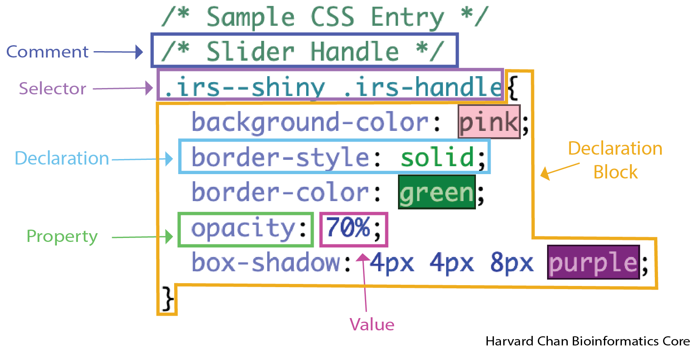

ui <- fluidPage(
includeCSS("www/style.css"),
<rest_of_your_UI>
)Customizing apps with CSS
R
Shiny
CSS
UI styling
Customizing the appearance of R Shiny apps with CSS allows developers to control layout, colors, spacing and visual identity beyond what default Shiny styling provides. This lesson introduces the basics of creating and linking a CSS file, understanding selectors and applying styles to common Shiny UI components. It is designed as a practical starting point for participants who want to enhance the look and usability of their Shiny applications.
Keywords
R Shiny, CSS selectors, UI customization
Learring Objectives
In this lesson, you will:
- Create a CSS file for a Shiny app
- Navigate our CSS resource to edit stlyes in your app
What is CSS?
CSS, also known as Cascading Style Sheet, is a style sheet language that allows you to customize the look for HTMLs. In fact, these lessons that your learning from right now even have their own CSS file controlling the colors, fonts, etc. of the things you see on this page. When we use a CSS file in conjunction with our Shiny app, it gives us much more control over the styling of each aspect of the elements in our UI in the same way that you can have fine control over your plots when creating them in R.
Note
Before we get started, it should be noted that this lesson and its accompanying resources are designed to be a starting place for getting your head around customizing your apps with a CSS file. It is not intended to be an exhaustive to everything you can do with a CSS file as there are virtually endless combinations of things you can style and ways to style them. We will introduce to you the concepts of how you can style things and then point you to a resource that we have developed to help you get started with styling your app with CSS.
Setting your workspace up for CSS
First, you will need to make a directory within your Shiny app’s directory called www. Whenever you run a Shiny app, it will check for this folder. In order to create this folder, let’s click the “New Folder” button in the “Files” tab, name it www and click OK.
Now, we need to make a style.css file and place it within this www directory. In order to do this, enter the www directory, click the “New File” button in the “Files” tab, select “Text File”, name it style.css and click OK.
Lastly, you need to add the includeCSS() function with the path to your CSS file to the app’s UI like:
Now, let’s open up the style.css file in RStudio next to our app and get to work!
CSS File Format
CSS files hold a set of CSS rules that govern the style of your app or HTML page. In order for your CSS file to be implemented, you need to format the rules in CSS format. In order to help with this, let’s look at an example of what a CSS rule from a CSS file might look like:

We will discuss each of the components of a CSS rule in the sections below.
Commenting your CSS
Commenting your code is a great practice in order to make your code more readable to other. While in many languages you comment your code with a #, in CSS you open a comment with /* and close a comment with */. In the example code above you can see that we had a comment in front of the rule. It can be really helpful to have your label each of your rules with a comment, so that you and easily figure out which rule is governing a particular part of your HTML or app.
Selectors
Selector select which HTML elements you would like to target for styling. You can think about this as the names of the things to style. These selectors fall into several categories, but the main two that we will deal with are:
- Class selectors - These selectors apply a CSS rule set across all object of that class and they start with a
.. For example, if you are trying to target all of the input sliders, then you would be concerning yourself with the.irs--shinyclass.
Note
You may have multiple class selectors like in the above example of .irs--shiny .irs-handle. In this case, .irs-handle is considered a descendant selector, which means that within the .irs--shiny there exists a class called .irs-handle. The class selectors in this case will be separated by a space.
- ID selectors - The selectors apply a CSS rule set to a specific
inputIDand they start with a#.
Note
You might see an example of this in input widget labels. For example you might see a CSS rule set like:
/* Slider Label */
#<inputID>-label{
color: orange;
font-size: 20px;
}In this example the <inputID> would need to be replaced with the inputID for this slider. Rulesets defined here only apply to the label of this input slider’s labels.
Another example might look like:
#my_slider .irs-handle {
background-color: cornflowerblue;
}In this case the class selector .irs--shiny has been replaced an ID selector targeting a specific input ID #my_slider.
Declaration Block
A declaration block in a CSS rule set contains all of the declarations that apply to a given selector.
Declaration
A declaration is a single instruction that sets a styling rule. It consists of a property and a value, separated by a colon and ending with a semicolon. For example:
color: red;Property
A property is the part of the declaration that specifies which aspect of the selected element you want to change. In the example above, the property is color.
Value
A value is the part of the declaration that specifies how the property should be styled. In the example above, the value is red.
CSS Specificity
If a CSS file contains rulesets for both an ID selector and a class selector, and those rulesets set the same property, the ID selector will be used because it has higher specificity. Here is an example: Let’s see an example of this:
/* All Slider Labels */
.shiny-input-container:has(.js-range-slider) > label {
background-color: red;
color: orange;
}
/* Label for slider with inputId = "slider_1" */
#slider_1-label{
color: blue;
}In the first ruleset, the class selector (.shiny-input-container:has(.js-range-slider) > label) applies a red background and an orange text color to all slider labels.
In the second ruleset, the ID selector #slider_1-label sets the text color to blue, but only for the slider whose inputId is slider_1.
Because ID selectors have higher specificity than class selectors, the color declaration in the ID ruleset overrides the color from the class ruleset. Therefore:
- All slider labels except
slider_1will haveorangetext. - The label for
slider_1will havebluetext. - All slider labels, including
slider_1, will have aredbackground, because the ID selector does not override that property.
In this situation, the slider_1 label “inherits” the background-color from the class selector because there is no conflicting declaration in the ID selector.
CSS Element Reference
In the list below, we have laid out different input and layout elements that you might want to alter with a CSS file. Within each lays out the different elements that you can style and
actionButton- Under developmentcheckboxInput/checkboxGroupInput- Under developmentdateInput/dateRangeInput- Under developmentnavbar- Under developmentradioButtonsselectInput- Under developmentsidebarPanel- Under developmentsliderInputtextInput/textAreaInput- Under development
We have also created a CSS Property Reference that gives a move detailed accounting what each property can accept for values.
Reuse
CC-BY-4.0